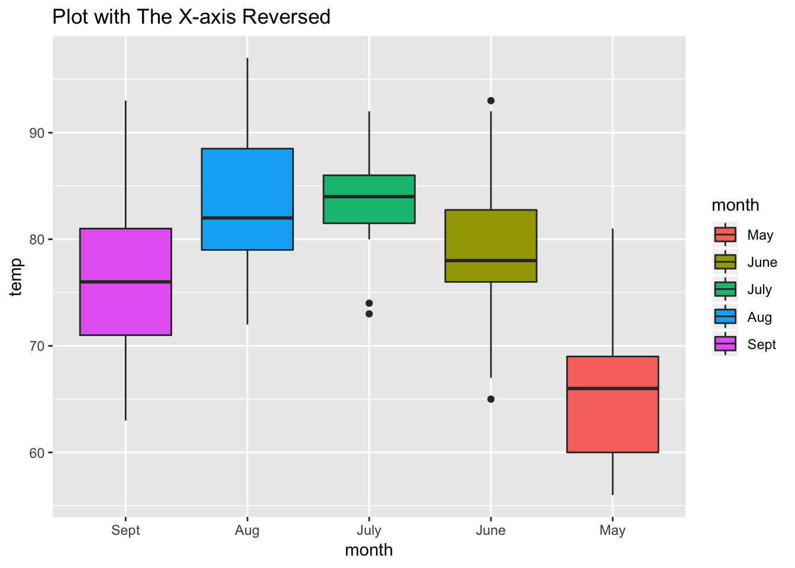
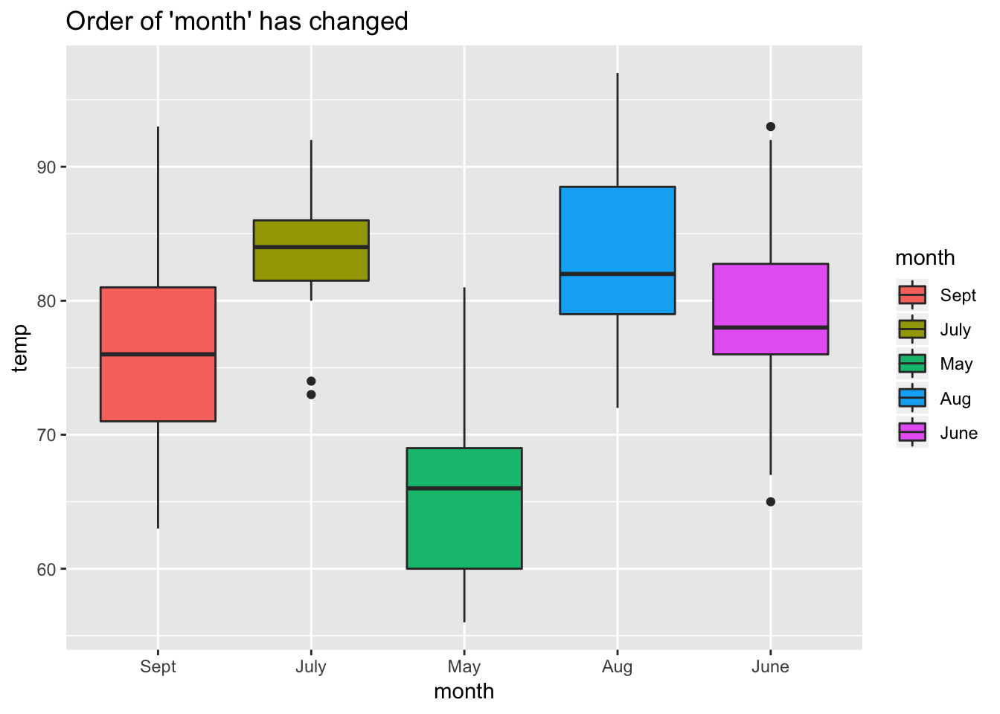
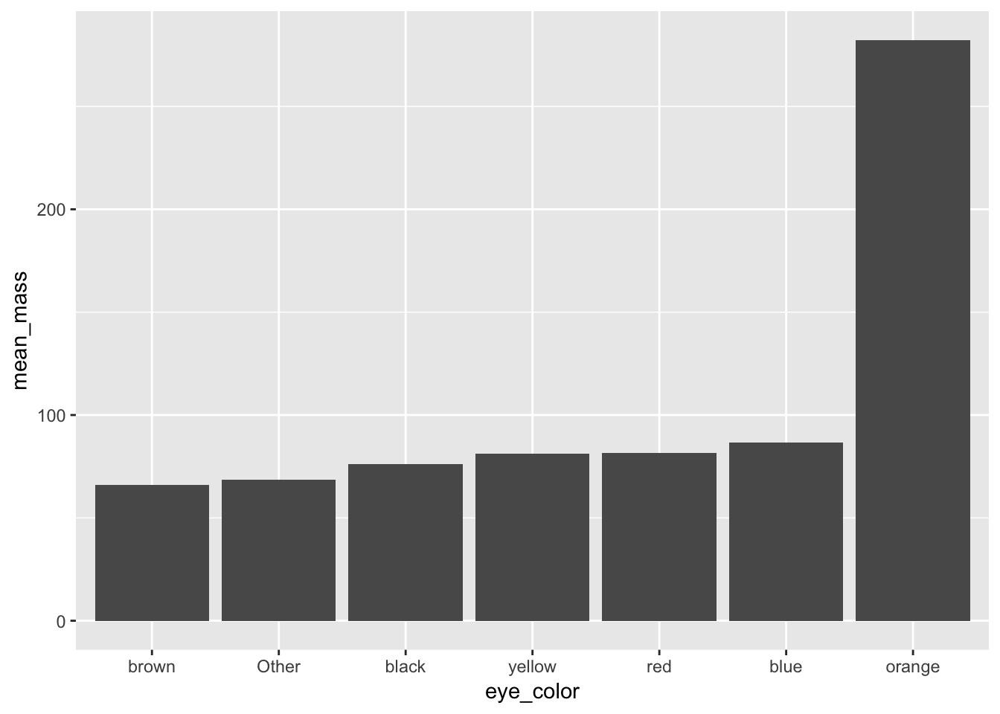

Chapter 8 Forcats tutorial
8.1 Dealing with Catergorical Data
Categorical variables deal with qualitative data and have have an infinite number or values (i.e. hair color, location, ethnicity) verses quantitative data that is on a continuious scale (i.e. 2,3,4).
Although this categorical information is useful, it might be hard to work with. Using a package to organize and manipulate categorical data can help.
8.2 Packages to Work with Categorical Data
Forcats is a package under the Tidyverse universe. However, it is not one of the main packages, so you would need to install forcats from tidyverse
You can install the package a few different ways.
Install the forcats package from Github:
Or enter the R code listed below
devtools::install_github("tidyverse/forcats")
install.packages("forcats")library(forcats)8.3 The Different Functions of Forcats
It is important to note a few things before using the Forcats package. First, this package works with categorical data in the form of factors or characters. You can check what type of class your variable is with the function class(). To use Forcats, you should change your variable to a factor with the function as.factor() or factor() or a character with the function as.character().
a<-"hi"
class(a)## [1] "character"b<-c(2,3,5)
class(b)## [1] "numeric"c<-as.factor(b)
class(c)## [1] "factor"Second,forcats is a package that is used to do something with you categorical data. When you enter in the specific R code to do something with that data, it will store it into the variable you selected. However, it may be difficult for you to see that what you did with Forcats actually happened. It is useful to also install the package dplyr and ggplot2 to your R studio so you can visualize what you have done with your data
library(ggplot2)
library(dplyr)8.3.1 Recoding a Factor
If you have categorical variables/factors, you can change the name or identity of that factor.
Use the fct_recode()
#Using data in r (airquality)
# Take a look at the data
glimpse(airquality)## Observations: 153
## Variables: 6
## $ ozone <int> 41, 36, 12, 18, NA, 28, 23, 19, 8, NA, 7, 16, 11, 14, 18…
## $ solar.r <int> 190, 118, 149, 313, NA, NA, 299, 99, 19, 194, NA, 256, 2…
## $ wind <dbl> 7.4, 8.0, 12.6, 11.5, 14.3, 14.9, 8.6, 13.8, 20.1, 8.6, …
## $ temp <int> 67, 72, 74, 62, 56, 66, 65, 59, 61, 69, 74, 69, 66, 68, …
## $ month <int> 5, 5, 5, 5, 5, 5, 5, 5, 5, 5, 5, 5, 5, 5, 5, 5, 5, 5, 5,…
## $ day <int> 1, 2, 3, 4, 5, 6, 7, 8, 9, 10, 11, 12, 13, 14, 15, 16, 1…# The column month is listed as an integer so lets change it to a factor
airquality$month <- factor(airquality$month)
levels(airquality$month)## [1] "5" "6" "7" "8" "9"# Now we can recode the factors into the categorical names of the months
airquality$month <- fct_recode(airquality$month, May = '5', June = '6', July = '7', Aug = '8', Sept = '9')
glimpse(airquality$month)## Factor w/ 5 levels "May","June","July",..: 1 1 1 1 1 1 1 1 1 1 ...8.3.2 Reversing the order of the Factors
If you have categorical variables/factors in one order you can reverse that order.
Use fct_rev()
#You will reverse the original order of the factors
ggplot(airquality, aes(fct_rev(month), temp)) +
geom_boxplot(aes(fill = month)) +
labs(x = "month") +
ggtitle(label = "Plot with The X-axis Reversed")
8.3.3 Releveling a Factor
If you want to change the location or level of your factor.
Use fct_relevel()
#You will see the order of the factor months has changed from the orginal order
airquality$month <- fct_relevel(airquality$month, 'Sept', 'July', 'May', 'Aug', 'June')
levels(airquality$month)## [1] "Sept" "July" "May" "Aug" "June"ggplot(airquality, aes(month, temp)) +
geom_boxplot(aes(fill = month)) +
ggtitle(label = "Order of 'month' has changed")
8.3.4 Combining Levels of a Factor
If you have too many levels of a factor, you can combine some of them to an “other” category and choose to display only a certain number of the levels you want.
Use fct_lump()
#You will lump the category skin color into 5 levels and then the remaining will be in "other"
starwars %>%
mutate(skin_color = fct_lump(skin_color, n = 5)) %>%
count(skin_color, sort = TRUE)## # A tibble: 6 x 2
## skin_color n
## <fct> <int>
## 1 Other 41
## 2 fair 17
## 3 light 11
## 4 dark 6
## 5 green 6
## 6 grey 68.3.5 Randomly Reordering a Factor
If you don’t want the order your factors are in but don’t know what order you want, you can randomly choose the order of your factors.
Use fct_shuffle()
# You will see a random order of the factor eye color
Randomized <- starwars$eye_color %>%
fct_shuffle()
levels(Randomized)## [1] "green, yellow" "red, blue" "brown" "gold"
## [5] "unknown" "white" "black" "pink"
## [9] "hazel" "red" "blue" "dark"
## [13] "orange" "blue-gray" "yellow"8.3.6 Reordering a Factor
Lastly, you can reorder your factors by using another variable.
Use fct_reorder()
#First you will lump how many levels of the factor eyecolor you want
glimpse(starwars)## Observations: 87
## Variables: 13
## $ name <chr> "Luke Skywalker", "C-3PO", "R2-D2", "Darth Vader", "L…
## $ height <int> 172, 167, 96, 202, 150, 178, 165, 97, 183, 182, 188, …
## $ mass <dbl> 77.0, 75.0, 32.0, 136.0, 49.0, 120.0, 75.0, 32.0, 84.…
## $ hair_color <chr> "blond", NA, NA, "none", "brown", "brown, grey", "bro…
## $ skin_color <chr> "fair", "gold", "white, blue", "white", "light", "lig…
## $ eye_color <chr> "blue", "yellow", "red", "yellow", "brown", "blue", "…
## $ birth_year <dbl> 19.0, 112.0, 33.0, 41.9, 19.0, 52.0, 47.0, NA, 24.0, …
## $ gender <chr> "male", NA, NA, "male", "female", "male", "female", N…
## $ homeworld <chr> "Tatooine", "Tatooine", "Naboo", "Tatooine", "Alderaa…
## $ species <chr> "Human", "Droid", "Droid", "Human", "Human", "Human",…
## $ films <list> [<"Revenge of the Sith", "Return of the Jedi", "The …
## $ vehicles <list> [<"Snowspeeder", "Imperial Speeder Bike">, <>, <>, <…
## $ starships <list> [<"X-wing", "Imperial shuttle">, <>, <>, "TIE Advanc…avg_mass_eye_color <- starwars %>%
mutate(eye_color = fct_lump(eye_color, n = 6)) %>%
group_by(eye_color) %>%
summarise(mean_mass = mean(mass, na.rm = TRUE))#Then you will reorder the factor by it's mean mass from least to most
avg_mass_eye_color %>%
mutate(eye_color = fct_reorder(eye_color, mean_mass)) %>%
ggplot(aes(x = eye_color, y = mean_mass)) +
geom_col()
If you want to try these out for yourself, there are many different data sources that R provides for you to practice on. My favorite is the starwars data, but listed in my examples is also airquality data.
Below are some links to tutorials that I used to compromise this tutorial. I hope you have found it useful and feel free to now use this link as a tutorial for working with categorical data.
Happy coding!
link to factors chapter reference